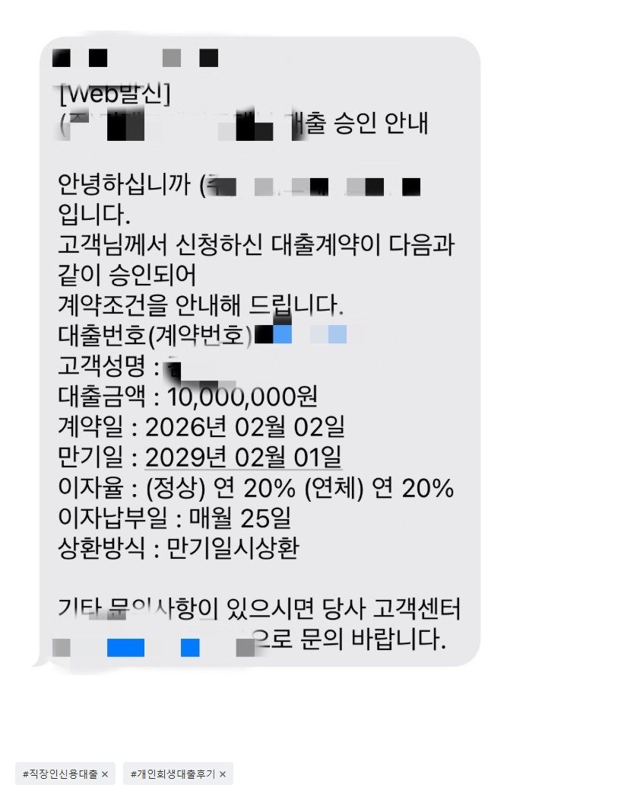

[개인회생자대출 ] 미납으로 폐지 걱정중 대출 신청후 승인되어 해결!! 조영우 이사님 대출후기
[대출 조건]
재직형태 : 직장인
재직기간 : 3년 3개월
4대보험 가입유무 : 유
소득 : 연 5500만원
신용등급 : KCB 100, NICE 350
채무내역 : 없음
필요서류 : 신분증, 초본, 건강보험 득실확인서, 건강보험 납부확인서, 급여통장 3개월 이체내역, 개인회생 사건번호 및 채권자 목록
[대출 후기]
후기 : 변제 미납금이 2회차였고 3회차에 들어서며 폐지 가능성이 생겼고, 그 외 재직자전형으로 학교를 다니다보니 등록금 납부와 교통비 및 생활비가 급하여 급하게 요청드렸는데 오늘 오전에 요청 드렸으나, 빠르게 처리 도와주셔서 오늘 오후중으로 바로 처리를 완료하였습니다.
바쁘신 와중에도 항상 답변도 빠르고 자세하게 알려주신
조영우이사님 및 뱅크앤론 관계자분들께 감사드립니다.
개인회생중이기에 법정 최고 이율은 어쩔 수 없는 상황이었고, 중도상환 여부와 대출가능금액이 중요한 상황이었는데 두가지 조건 다 잡아주셔서 차량 담보 없이도 원하는 금액 승인 받을 수 있었습니다.

https://cafe.naver.com/cityman88/310050